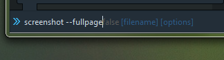

Что делать, если вам в Firefox вдруг потребовалось сделать скриншот длинной веб-страницы, требующей прокрутки? Часто пользователи этого браузера начинают искать плагины для создания снимка страницы.
Но не все знают, что Firefox может сделать скриншот с прокруткой и без расширений.
Для того, чтобы сделать скриншот длинной страницы, нужно совершить следующие действия:
1. Открыть консоль Firefox с помощью клавиш Shift+F2
2. В появившейся снизу строке набрать:
screenshot --fullpage
(да, именно с двумя тире). После чего нажать Enter.

3. Скриншот всей страницы будет сохранён в папку, установленную у вас в настройках по умолчанию, как «путь для сохранения файлов». Либо, если у вас в настроено, чтобы браузер каждый раз спрашивать путь для сохранения файла.